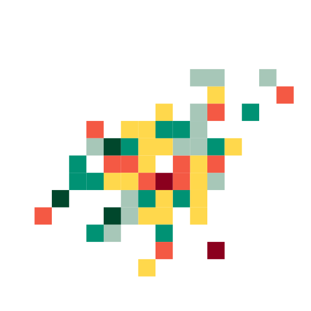
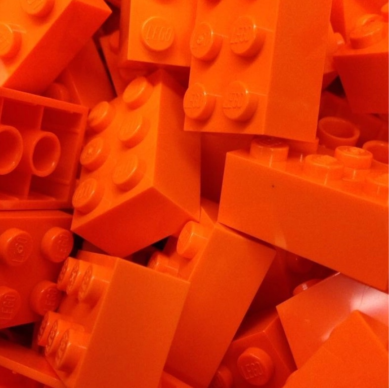

Your brand has got the answers. AI just can’t find them.

You don’t need to create a second universe of AI content. You just need to make the gold you already have accessible to AI.
For years, marketers have been nailing the art of producing content for people. Websites, case studies, reports, videos and white papers: all familiar steps in a campaign designed to tell a story, build a narrative and give audiences a reason to believe. This kind of storytelling still really matters.
But the way people find and consume that content is changing. Increasingly, we are asking AI systems questions rather than navigating websites themselves. And AI doesn’t consume content in the same way a person does.
AI doesn’t care about your finely crafted story. It’s only interested in finding specific chunks of knowledge, understanding how they relate to one another and morphing them into an answer.
Your content may contain everything the LLM needs. But if the knowledge is scattered across pages and documents, it may struggle to find it, connect it or represent it accurately. That creates a new challenge for marketers: how do you organise the knowledge you already have so AI can understand and use it?
Getting specific
A single webpage might explain a concept, tell a customer story, introduce a product and link to related ideas. A report might bring together research and recommendations. A case study might demonstrate expertise by taking the reader from challenge to solution to outcome.
For a human reader, that all makes perfect sense. On a good day, we can hold several ideas in our heads at once. We understand context. We can skim, interpret and make connections between different sections. But imagine asking an AI system a very specific question: “How long should a magnetron last across different kinds of RF Power applications?”
The answer might exist somewhere on your website (I’m looking at you, Teledyne e2v). In fact, it might exist across five case studies, three articles and a presentation. But there may be no single, authoritative expression of your answer to that question.
The knowledge is there, but the answer isn't. This is an increasingly important distinction.

The LEGO conundrum
Your business might have spent decades building up valuable content. But you’ve been organising it around websites, channels and campaigns, not around the questions an AI system is being asked on behalf of your audience. That means you risk being overlooked at precisely the moment when a potential customer is hunting for your expertise.
The answer isn't to stop creating thoughtful, original content. Quite the opposite. Your existing content is the raw material for the new world of AI-driven discovery.
Think of it like an elaborate LEGO sculpture. You've spent years clicking the bricks together to create something nuanced and beautiful. The problem is, an AI system might not want the whole sculpture. It may only need the blue and green ones for now. If a potential customer asks about a specific topic, AI needs to find the relevant pieces of knowledge quickly. It needs to know where all the blue and green pieces are, where they came from and what they can tell us about the structure.
It needs to reorganise the bricks without destroying the sculpture.
Closing the LLM gap
Your website is just one expression of your brand knowledge. Beneath it, there is a much bigger body of information: everything your organisation has ever said, demonstrated and learned.
The challenge is to make all that information usable in a new environment, one that doesn’t just speak to people but to LLMs as well. That means identifying the individual ideas and areas of expertise contained within your existing content, understanding the relationships between them, and creating a definitive, evidence-based view of each one. At The Frameworks, we see this as an evolution of something marketers have always done: getting the right story, evidence and expertise in front of the right people. The difference is that the environment has changed.
Our Brand Proximity service uses AI to close the gap LLMs are putting between you and your audience. It analyses and reorganises what already exists. It can identify themes, connect related information, trace ideas back to their original sources and assemble the strongest available evidence around a particular topic. The output can then become a new layer of structured knowledge that sits alongside your existing brand experience.
In effect, you begin to have two ways of accessing the same brand knowledge: the rich, narrative experience designed for humans, and a structured representation that makes that knowledge easier for AI systems to understand, retrieve and cite (what LLMs effectively crave).